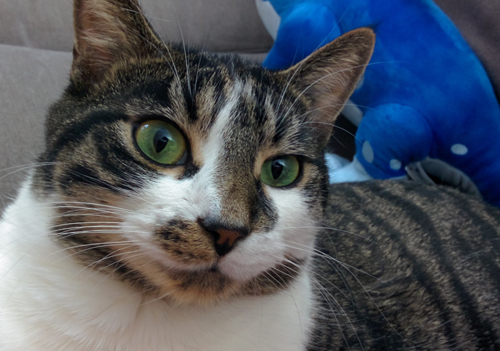
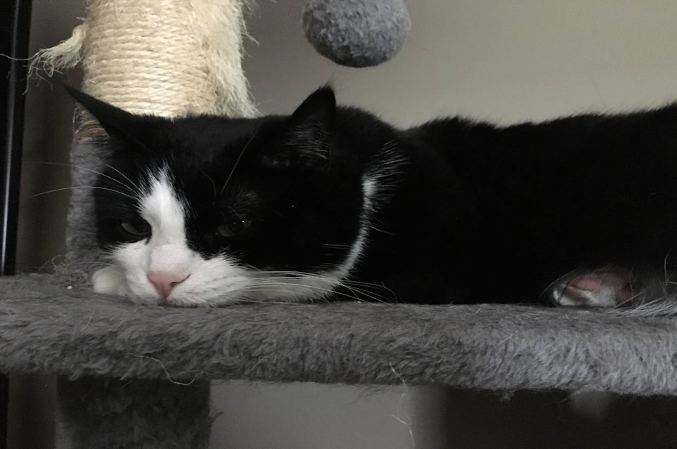
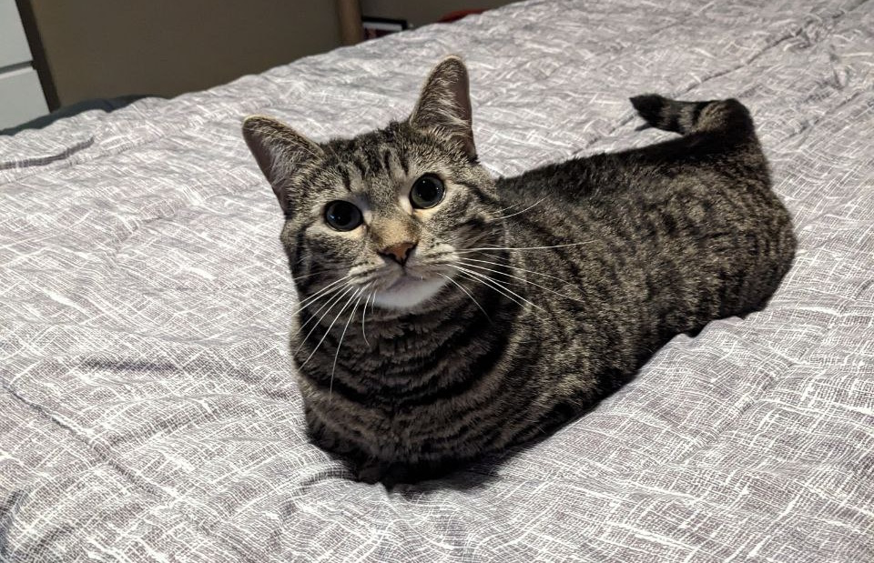
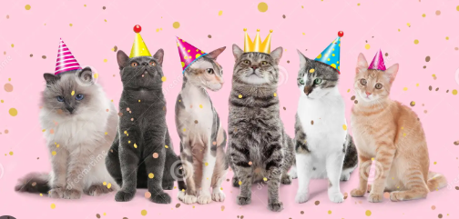
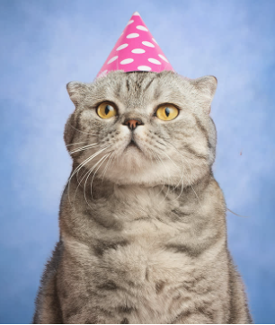

Meown Blog

Do cats know their name?
Yes! According to Teresa Manucy, DVM, a veterinarian at VCA Fleming Island Animal Hospital, cats can recognize and differentiate their name from other household pets’ names. She says this recognition is likely due to positive reinforcement or a cat’s association of their name with attention, food, or play.
Article Source: https://www.petmd.com
Image Source: Grabbed from Travis' Cat photos

Essential tips to raise healthy pets
- Keep your pet at a healthy weight.
- Exercise your pet.
- Feed your pet a balanced, nutritious diet.
- Have your veterinarian examine your pet at least once a year to make sure your pet is healthy and to help detect problems earlier.
- Vaccinate your pet against potentially deadly diseases such as distemper, parvo, panleukopenia and rabies.
- Keep your pet free of parasites (fleas and ticks, heartworm, etc.) – consult your veterinarian for the best product for your pet.
- Spay or neuter your pet.
Article Source: https://www.avma.org
Image Source: Grabbed from Travis' Cat photos

Why does my cat attack me?
Usually, it is the result of anxiety or fear, which causes your cat to attempt to defend themselves, even if that means scratching you. Luckily, there are several ways you can counteract the problem. Helping your cat stay calm and avoid unnecessary stress can prevent future attacks.
Article Source: https://www.bustersvision.org
Image Source: Grabbed from Travis' Cat photos
How to throw a birthday party for your cat.

Cat Birthday Party Ideas Mew Can Do Meow
You celebrate the birthdays of your other family members. Why should your fur-mily be any different? Many people throw a birthday party for their pets, both to mark milestones and make memories. You can have a lot of fun creating cat birthday party invitations, decorations, and games to ramp up the claw-some and make a meow-ficent and unforgettable party.
Birthday Cakes for Cats
What is any birthday party without a cake? You wouldn’t serve your cat a traditional human birthday cake to your kitty (that would be an un-fur-tunate cat-astrophe), but there are special birthday cakes you can make just for Sir Paws-a-Lot. There are even recipes for cat birthday cake icing made of mashed potatoes and rice flour for an extra special touch.
Make a super-simple individual cat birthday cake with tuna, egg white, flour, and cheese, baked in a muffin tin. Bonus: the recipe makes two so you can enjoy one with your litter-al best buddy. You can even snazz it up with some shrimp cocktail garnish, and serve the rest to your human guests.
Cat Birthday Party Decorations

Yes, the birthday paw-ty is for your cat, but it’s also for your friends and family. Celebrating your kitty’s gotcha day or approximate birthday is a great reason to go for an awesome cat-themed party. Much like a beach-themed bash or graduation gala, you can take the occasion to the max with cat décor and theming.
Some ideas include:
- Cat ear headbands – turn your guests into honorary kitties to join the birthday cool cat. Make them ahead of time or have your guests craft their own from supplies you provide as a fun cat birthday party activity.
- Cat balloons, or Mylar balloon letters – Spell out Meow or your cat’s name or a cat pun (see below). You can also convert plain balloons into adorable kitties with some permanent markets and construction paper.
- Cat piñata – Unless the idea of hitting a kitty effigy with a stick is a-paw-ling to you.
- Cat plates, napkins – There are entire collections of items made just for cat birthday parties.
- Paws for pawprints – Draw cat paws on your windows and mirrors with dry-erase markers or make pawprint cut-outs to add to tabletops and walls. Use chalk to draw pawprints on your sidewalk or driveway leading into your party.
- Cat pun posters – Make signs that say things like “No Dogs Allowed,” “Cat Crossing,” “Are You Kitten Me?” and “Paws for Celebration.”
- Cat toy decorations – Roll up small balls of yarn and place in a bowl. Put boxes out everywhere for your cat to choose from. Add toy mice to your table. Use a catnip (catmint) plant as a centerpiece.
- Showcase your cat in photos – Display pictures of your cat when they were a kitten, and other memories over their lives.
Cat Birthday Party Food Ideas
- Cat cake for humans – Make a cake in the shape of a cat head or get a cake made featuring a photo of your kitty.
- Seafood dishes – Cats are notorious for loving fish, so go for this food theme with your people food. Now’s the time for miniature crab cakes, seafood dip, shrimp cocktail, seared ahi tuna bites, and salmon croquettes.
- Pawprint brownie bites – With a silicone baking mold, you can turn your favorite brownie recipe into bite-size adorable pawprints. You can also make chocolates or butter mints using these molds.
- Kitty-shaped finger sandwiches – You can purchase a cookie cutter in the shape of a cat’s head and use it to cut out your bread to make cute finger sandwiches. Level up by filling them with noms cats love, such as tuna salad, chicken salad, or smoked salmon with cream cheese or mascarpone.
Article Source: https://www.armandhammer.com
Image Source: https://www.dreamstime.com/photos-images/cats-party.html